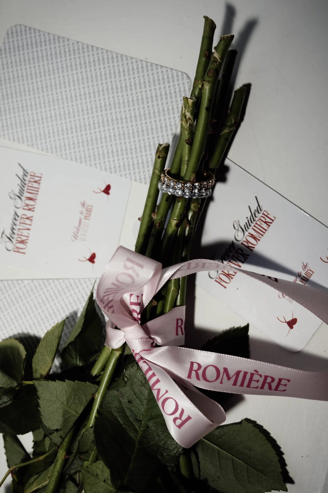

Forever guided
The Romière Story
Waar komt Forever Guided vandaan?
Een reminder om te vertrouwen op jouw eigen weg, gevormd door de mensen, momenten en herinneringen die met je meegaan.
Wherever life takes you, let something beautiful remind you of the way.


Forever guided
Not just a trend
Romière is ontstaan voor mensen die niet simpelweg trends volgen, maar kiezen voor pieces die persoonlijk voelen. Sieraden die jouw stijl versterken, je confidence geven en onderdeel worden van wie jij bent.
Made for confidence, defined by elegance, worn with individuality.

Forever Romière
Every detail has a meaning
Vanaf het moment dat je onze signature box opent, is ieder detail ontworpen om bijzonder te voelen. Van de verpakking tot het piece dat erin op je wacht.
Een sieraad om vandaag te dragen, later aan terug te denken en uiteindelijk onderdeel te maken van jouw eigen verhaal.
Behind the jewellery
Craftsmanship & materials
Bij Romière begint ieder piece bij de details. Van de glans van het metaal tot de manier waarop een steen het licht vangt: ieder element wordt gekozen met aandacht voor uitstraling, kwaliteit en timeless elegance.
Onze collecties worden vervaardigd uit zorgvuldig geselecteerde materialen, waaronder 925 sterling silver, 18K gold plating, stainless steel, freshwater pearls en zirconia. Materials chosen not only for how they look, but for how they feel when worn.
925 Sterling Silver
Een tijdloze basis met een zachte, heldere glans.
18K Gold Plating
Een warme gouden finish die iedere look verfijnt.
Freshwater Pearls
Natuurlijke parels, elk met een eigen subtiele glow.
Zirconia
Fonkelende stenen die het licht vangen bij iedere beweging.
Care that keeps it beautiful
Het is de balans tussen modern en timeless. Tussen een subtiel detail dat je iedere dag kunt dragen en een statement piece dat een complete look verandert. Jewellery that feels considered, never ordinary.
Want een mooi sieraad draag je misschien voor één moment.
Een bijzonder sieraad wordt onderdeel van vele momenten.

Find your signature piece
The Signature Edit
The right jewellery does more than complete a look. It reflects who you are, marks a moment and becomes part of your story.
The Signature Edit is een collectie van sieraden die ontworpen zijn om onderdeel te worden van jouw verhaal. Die ene necklace waar je iedere ochtend opnieuw naar grijpt, of een piece dat je stilletjes herinnert aan een moment, een persoon of een gevoel.
Bij Romière geloven we dat een sieraad pas écht bijzonder wordt wanneer het betekenis krijgt. Daarom brengt The Signature Edit tijdloze pieces samen, gemaakt om verder te gaan dan seasons and trends.
Discover the editAre you forever guided to Romière?
Ontdek de Forever line en vind het piece dat bij jouw verhaal past.